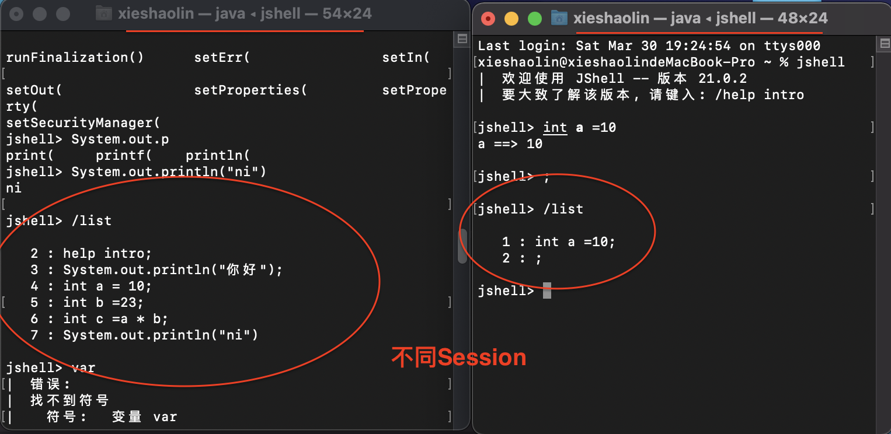
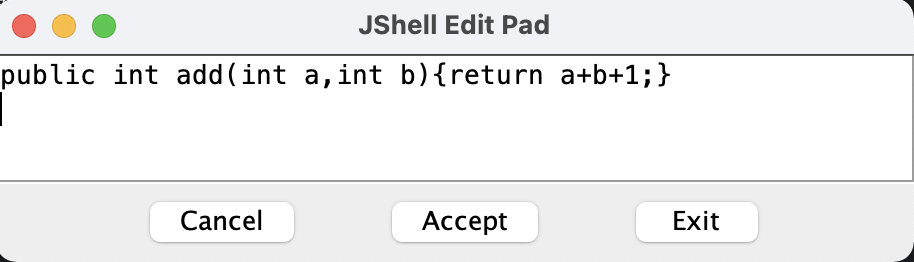
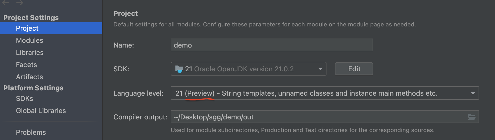

Java 9: jShell命令
Java 终于拥有了像Python 和 Scala 之类语言的REPL工具（交互式编程环境，read - evaluate - print - loop）：jShell。以交互式的方式对语句和表达式进行求值。即写即得、快速运行。
调出jShell
xieshaolin@xieshaolindeMacBook-Pro ~ % jshell
| 欢迎使用 JShell -- 版本 21.0.2
| 要大致了解该版本, 请键入: /help intro
获取帮助
jshell> /help intro
|
| intro
| =====
|
| 使用 jshell 工具可以执行 Java 代码，从而立即获取结果。
| 您可以输入 Java 定义（变量、方法、类等等），例如：int x = 8
| 或 Java 表达式，例如：x + x
| 或 Java 语句或导入。
| 这些小块的 Java 代码称为“片段”。
|
| 这些 jshell 工具命令还可以让您了解和
| 控制您正在执行的操作，例如：/list
|
| 有关命令的列表，请执行：/help
直接执行方法
jshell> System.out.println("你好");
你好
变量的声明和使用
jshell> int a = 10;
a ==> 10
jshell> int b =23
b ==> 23
jshell> int c =a * b
c ==> 230
导入包
jshell> import java.nio.*
查看导入的包
jshell> /imports
| import java.io.*
| import java.math.*
| import java.net.*
| import java.nio.file.*
| import java.util.*
| import java.util.concurrent.*
| import java.util.function.*
| import java.util.prefs.*
| import java.util.regex.*
| import java.util.stream.*
| import java.nio.*
只需按下 Tab 键，就能自动补全代码
jshell> Sy
SyncFailedException SynchronousQueue System
jshell> System.out.p
print( printf( println(
jshell> System.out.println("ni")
ni
列出当前 session 里所有有效的代码片段
一个终端可以理解为一个session
创建并使用方法
jshell> public int add(int a,int b){return a+b;}
| 已创建 方法 add(int,int)
jshell> add(3,4)
$9 ==> 7
查看所有方法
jshell> /methods
| int add(int,int)
使用外部代码编辑器来编写 Java 代码
jshell> /edit add
2024-03-30 19:35:42.414 jshell[55817:7387020] TSM AdjustCapsLockLEDForKeyTransitionHandling - _ISSetPhysicalKeyboardCapsLockLED Inhibit
| 已修改 方法 add(int,int)
会出现如下弹窗：
修改完代码之后就可以使用了：
jshell> add(3,4)
$11 ==> 8
从外部文件加载源代码
在hello.java文件里写入一下代码：
public void printHello() {
System.out.println("hello");
}
printHello();
使用/open命令调用
jshell> /open /Users/xieshaolin/hello.java
hello
退出jShell
jshell> /exit
| 再见
异常处理之try-catch资源关闭
JDK 7之前
/*
* 举例：从test.txt(utf-8)文件中，读取内容，写出到abc.txt(gbk)文件中
* JDK7之前的写法
* */
@Test
public void test03() {
BufferedReader br = null;
BufferedWriter bw = null;
try {
FileInputStream fis = new FileInputStream("test.txt");
InputStreamReader isr = new InputStreamReader(fis, "utf-8");
br = new BufferedReader(isr);
FileOutputStream fos = new FileOutputStream("abc.txt");
OutputStreamWriter osw = new OutputStreamWriter(fos, "gbk");
bw = new BufferedWriter(osw);
String str;
while ((str = br.readLine()) != null) {
bw.write(str);
bw.newLine();
bw.flush();
}
} catch (IOException e) {
e.printStackTrace();
} finally {
try {
if (bw != null)
bw.close();
} catch (IOException e) {
e.printStackTrace();
}
try {
if (br != null)
br.close();
} catch (IOException e) {
e.printStackTrace();
}
}
}
JDK 7
try(资源对象的声明和初始化){
业务逻辑代码,可能会产生异常
}catch(异常类型1 e){
处理异常代码
}catch(异常类型2 e){
处理异常代码
}
/*
* 举例：从test.txt(utf-8)文件中，读取内容，写出到abc.txt(gbk)文件中
* JDK7中的写法
* */
@Test
public void test04() {
try (
FileInputStream fis = new FileInputStream("test.txt");
InputStreamReader isr = new InputStreamReader(fis, "utf-8");
BufferedReader br = new BufferedReader(isr);
FileOutputStream fos = new FileOutputStream("abc.txt");
OutputStreamWriter osw = new OutputStreamWriter(fos, "gbk");
BufferedWriter bw = new BufferedWriter(osw);
) {
String str;
while ((str = br.readLine()) != null) {
bw.write(str);
bw.newLine();
bw.flush();
}
} catch (IOException e) {
e.printStackTrace();
}
}
JDK 9
A a = new A();
B b = new B();
try(a;b){
可能产生的异常代码
}catch(异常类名 变量名){
异常处理的逻辑
}
因为 创建对象是在 try-catch之外，所以需要先将异常抛出拉。但JDK7的写法就不需要。
@Test
public void test06() throws FileNotFoundException, UnsupportedEncodingException {
FileInputStream fis = new FileInputStream("test.txt");
InputStreamReader isr = new InputStreamReader(fis, "utf-8");
BufferedReader br = new BufferedReader(isr);
FileOutputStream fos = new FileOutputStream("abc.txt");
OutputStreamWriter osw = new OutputStreamWriter(fos, "gbk");
BufferedWriter bw = new BufferedWriter(osw);
try(fis;isr;br;fos;osw;bw){
// 是final的，不可再被赋值
// fis = new InputStreamReader(System.in);
String str;
while ((str = br.readLine()) != null) {
bw.write(str);
bw.newLine();
bw.flush();
}
}catch (IOException e){
e.printStackTrace();
}
}
局部变量类型推断：var
Java中var是Java10版本新出的特性，用它来定义局部变量。
使用var 定义变量的语法： var 变量名 = 初始值；
var不是关键字，它相当于是一种动态类型；
var动态类型是编译器根据变量所赋的值来推断类型；
var 没有改变Java的本质，var只是一种简便的写法，
//可以使用的场景
@Test
public void test1(){
//1.局部变量的实例化
// ArrayList<String> list = new ArrayList<>();
var list = new ArrayList<String>();
var set = new LinkedHashSet<Integer>();
//2.增强for循环中的索引
// for(String s :list)
for (var v : list) {
System.out.println(v);
}
//3.传统for循环中
for (var i = 0; i < 100; i++) {
System.out.println(i);
}
//4. 返回值类型含复杂泛型结构
var iterator = set.iterator();
HashMap<String,Integer> map = new HashMap<>();
var entrySet = map.entrySet();
}
使用var定义变量的优缺点：
优点：使代码简洁和整齐。
缺点：降低了程序的可读性。
instance of 的模式匹配
/*
* 举例1：
* JDK14之前
* */
@Test
public void test1(){
Object obj = new String("hello,Java14");
if(obj instanceof String){
String str = (String) obj;
System.out.println(str.contains("Java"));
}else{
System.out.println("非String类型");
}
}
/*
* 举例1：
* JDK14中
* */
@Test
public void test2(){
Object obj = new String("hello,Java14");
if(obj instanceof String str){
System.out.println(str.contains("Java"));
}else{
System.out.println("非String类型");
}
}
switch表达式
/*
* 举例1：
* JDK12之前的写法
* */
@Test
public void test1() {
Week day = Week.FRIDAY;
switch (day) {
case MONDAY:
System.out.println(1);
break;
case TUESDAY:
case WEDNESDAY:
case THURSDAY:
System.out.println(2);
break;
case FRIDAY:
System.out.println(3);
break;
case SATURDAY:
case SUNDAY:
System.out.println(4);
break;
default:
throw new RuntimeException("What day is today?" + day);
}
}
传统switch声明语句的弊端：
- 匹配是自上而下的，如果忘记写break，后面的case语句不论匹配与否都会执行； —>case穿透
- 所有的case语句共用一个块范围，在不同的case语句定义的变量名不能重复；
- 不能在一个case里写多个执行结果一致的条件；
- 整个switch不能作为表达式返回值；
JDK12中的写法：switch表达式，省去了break语句，避免了因少写break而出现case穿透
同时将多个 case 合并到一行，显得简洁、清晰，也更加优雅的表达逻辑分支。
@Test
public void test2() {
Week day = Week.FRIDAY;
switch (day) {
case MONDAY -> System.out.println(1);
case TUESDAY, WEDNESDAY, THURSDAY -> System.out.println(2);
case FRIDAY -> System.out.println(3);
case SATURDAY, SUNDAY -> System.out.println(4);
default -> throw new RuntimeException("What day is today?" + day);
}
}
JDK12中的写法：还可以使用变量接收switch表达式的结果。
@Test
public void test3() {
Week day = Week.FRIDAY;
int result = switch (day) {
case MONDAY -> 1;
case TUESDAY, WEDNESDAY, THURSDAY -> 2;
case FRIDAY -> 3;
case SATURDAY, SUNDAY -> 4;
default -> throw new RuntimeException("What day is today?" + day);
};
System.out.println(result);// 3
}
JDK13中的写法：引入了yield关键字，用于返回指定的数据，结束switch结构。
这意味着，switch表达式(返回值)应该使用yield，switch语句(不返回值)应该使用break。
@Test
public void test4() {
Week day = Week.FRIDAY;
int result = switch (day) {
case MONDAY -> {
yield 1;
}
case TUESDAY, WEDNESDAY, THURSDAY -> {
System.out.println("运行其他代码");
yield 2;
}
case FRIDAY -> {
System.out.println("运行其他代码");
yield 3;
}
case SATURDAY, SUNDAY -> {
System.out.println("运行其他代码");
yield 4;
}
default -> {
System.out.println("值未找到");
yield 5;
}
};
System.out.println(result);
}
为了保持兼容性，case 条件语句中依然可以使用字符 : ，但是同一个 switch 结构里不能混用 -> 和 : ，否则编译错误。
@Test
public void test5() {
Week day = Week.FRIDAY;
int result = switch (day) {
case MONDAY:
yield 1;
case TUESDAY, WEDNESDAY, THURSDAY:
yield 2;
case FRIDAY:
yield 3;
case SATURDAY, SUNDAY:
yield 4;
default:
yield 5;
};
System.out.println(result);
}
JDK17的预览特性：switch的模式匹配
在使用预览特性的时候，需要把对应的JDK调成（preview）模式
相当于：switch + instanceof
public class SwitchPatternTest {
public static void main(String[] args) {
System.out.println(formatter(12)); // int 12
System.out.println(formatterSwitchPattern(12)); // int 12
}
/*
* JDK17之前
* */
static String formatter(Object o) {
String formatted = "unknown";
if (o instanceof Integer i) {
formatted = "int " + i;
} else if (o instanceof Long l) {
formatted = "long " + l;
} else if (o instanceof Double d) {
formatted = "double " + d;
} else if (o instanceof String s) {
formatted = "String " + s;
}
return formatted;
}
/*
* JDK17中switch的模式匹配
* */
static String formatterSwitchPattern(Object o) {
String formatted = switch(o){
case Integer i:
yield "int " + i;
case Long l:
yield "long " + l;
case Double d:
yield "double " + d;
case String s:
yield "String " + s;
default:
yield o.toString();
};
return formatted;
}
}
文本块
//对比1：
@Test
public void test1() {
String info = "<html>\n" +
" <body>\n" +
" <p>Hello, 尚硅谷</p>\n" +
" </body>\n" +
"</html>";
System.out.println(info);
}
@Test
public void test2() {
String info = """
<html>
<body>
<p>Hello, 尚硅谷</p>
</body>
</html>
""";
System.out.println(info);
}
JDK13的新特性：使用"""作为文本块的开始符和结束符，在其中就可以放置多行的字符串，不需要进行任何转义。因此，文本块将提高Java程序的可读性和可写性。在JDK15中功能转正
JDK14的版本主要增加了两个escape sequences，分别是
\ <line-terminator>：\取消换行操作\s escape sequence：\s表示一个空格
/*
* JDK14新特性：
* \:取消换行操作
* \s:表示一个空格
* */
@Test
public void test7(){
String newQuery1 = """
SELECT id,name,email \
FROM customers\s\
WHERE id > 4 \
ORDER BY email DESC
""";
System.out.println(newQuery1);
}
Record
record 是一种全新的类型，它本质上是一个 final 类，同时所有的属性都是 final 修饰，它会自动编译出 public get 、hashcode 、equals、toString、构造器等结构，减少了代码编写量。
具体来说：当你用record 声明一个类时，该类将自动拥有以下功能：
- 获取成员变量的简单方法，比如例题中的 name() 和 partner() 。注意区别于我们平常getter()的写法。
- 一个 equals 方法的实现，执行比较时会比较该类的所有成员属性。
- 重写 hashCode() 方法。
- 一个可以打印该类所有成员属性的 toString() 方法。
- 只有一个构造方法。
- 还可以在record声明的类中定义静态字段、静态方法、构造器或实例方法。
- 不能在record声明的类中定义实例字段；类不能声明为abstract；不能声明显式的父类等。
以前的方法：
public class Order {
//属性：private final修饰
private final int orderId;
private final String orderName;
//构造器中初始化属性
public Order(int orderId, String orderName) {
this.orderId = orderId;
this.orderName = orderName;
}
//提供属性的getter方法
public int orderId() {
return orderId;
}
public String orderName() {
return orderName;
}
//equals()和hashCode()
@Override
public boolean equals(Object o) {
if (this == o) return true;
if (o == null || getClass() != o.getClass()) return false;
Order order = (Order) o;
return orderId == order.orderId && Objects.equals(orderName, order.orderName);
}
@Override
public int hashCode() {
return Objects.hash(orderId, orderName);
}
//toString()
@Override
public String toString() {
return "Order{" +
"orderId=" + orderId +
", orderName='" + orderName + '\'' +
'}';
}
}
现在使用record关键字
public record Order1(int orderId,String orderName) {
}
测试老方法
@Test
public void test1(){
Order order1 = new Order(1001,"orderAA");
//测试toString()
System.out.println(order1);//Order{orderId=1001, orderName='orderAA'}
//测试getter()
System.out.println(order1.orderId());//1001
System.out.println(order1.orderName());//orderAA
Order order2 = new Order(1001,"orderAA");
//测试equals()
System.out.println(order1.equals(order2));//true
//测试hashCode()和equals()
HashSet<Order> set = new HashSet<>();
set.add(order1);
set.add(order2);
System.out.println(set);//[Order{orderId=1001, orderName='orderAA'}]
}
测试record
//测试Record
@Test
public void test2(){
Order1 order1 = new Order1(1001,"orderAA");
//测试toString()
System.out.println(order1);//Order1[orderId=1001, orderName=orderAA]
//测试getter()
System.out.println(order1.orderId());//1001
System.out.println(order1.orderName());//orderAA
Order1 order2 = new Order1(1001,"orderAA");
//测试equals()
System.out.println(order1.equals(order2));//true
//测试hashCode()和equals()
HashSet<Order1> set = new HashSet<>();
set.add(order1);
set.add(order2);
System.out.println(set);//[Order1[orderId=1001, orderName=orderAA]]
}
在record里面还可以声明其他方法和构造器
public record Person(int id,String name) {
//- 还可以在record声明的类中定义静态字段、静态方法、构造器或实例方法。
static String info = "我是一个人";
public static void show(){
System.out.println("我是一个人！");
}
public Person(){
this(0,null);
}
public void eat(){
System.out.println("人吃饭");
}
//- 不能在record声明的类中定义实例字段；类不能声明为abstract；不能声明显式的父类等。
// final int age;
}
record的设计目标是提供一种将数据建模为数据的好方法。它也不是 JavaBeans 的直接替代品，因为record的方法不符合 JavaBeans 的 get 标准。另外 JavaBeans 通常是可变的，而记录是不可变的。尽管它们的用途有点像，但记录并不会以某种方式取代 JavaBean。
密封类：sealed
在 Java 中如果想让一个类不能被继承和修改，这时我们应该使用 final 关键字对类进行修饰。不过这种要么可以继承，要么不能继承的机制不够灵活，有些时候我们可能想让某个类可以被某些类型继承，但是又不能随意继承，是做不到的。Java 15 尝试解决这个问题，引入了 sealed 类，被 sealed 修饰的类可以指定子类。这样这个类就只能被指定的类继承。
//Person是一个密封类，可以被指定的子类所继承。非指定的类不能继承Person类
public sealed class Person permits Student,Teacher,Worker{
}
//要求指定的子类必须是final、sealed、non-sealed三者之一
final class Student extends Person{} //Student类不能被继承了。
sealed class Teacher extends Person permits SeniorTeacher{} //Teacher类只能被指定的子类继承
// non-sealed 表示不密封，没有任何限制，可以陪继承
non-sealed class SeniorTeacher extends Teacher{
}
non-sealed class Worker extends Person{} //Worker类在继承时，没有任何限制
class WatchWorker extends Worker{}
//'Farmer' is not allowed in the sealed hierarchy
//class Farmer extends Person{}
Optional类
JDK8的新特性
Optional<T> 类(java.util.Optional) 是一个容器类，它可以保存类型T的值，代表这个值存在。或者仅仅保存null，表示这个值不存在。如果值存在，则isPresent()方法会返回true，调用get()方法会返回该对象。
创建Optional类对象的方法：
static <T> Optional<T> empty()：用来创建一个空的Optional实例static <T> Optional<T> of(T value)：用来创建一个Optional实例，value必须非空static <T> Optional<T> ofNullable(T value)：用来创建一个Optional实例，value可能是空，也可能非空
判断Optional容器中是否包含对象：
boolean isPresent(): 判断Optional容器中的值是否存在void ifPresent(Consumer<? super T> consumer)：判断Optional容器中的值是否存在，如果存在，就对它进行Consumer指定的操作，如果不存在就不做
获取Optional容器的对象：
T get(): 如果调用对象包含值，返回该值。否则抛异常。T get()与of(T value)配合使用T orElse(T other)：orElse(T other)与ofNullable(T value)配合使用，如果Optional容器中非空，就返回所包装值，如果为空，就用orElse(T other)中other指定的默认值（备胎）代替T orElseGet(Supplier<? extends T> other)：如果Optional容器中非空，就返回所包装值，如果为空，就用Supplier接口的Lambda表达式提供的值代替T orElseThrow(Supplier<? extends X> exceptionSupplier)：如果Optional容器中非空，就返回所包装值，如果为空，就抛出你指定的异常类型代替原来的NoSuchElementException
@Test
public void test(){
String star = "迪丽热巴";
star = null;
//使用Optional避免空指针的问题
//1. 实例化：
//ofNullable(T value)`：用来创建一个Optional实例，value可能是空，也可能非空
Optional<String> optional = Optional.ofNullable(star);
//orElse(T other):如果Optional实例内部的value属性不为null，则返回value。如果value为null，
//则返回other。
String otherStar = "杨幂";
String finalStar = optional.orElse(otherStar);
System.out.println(finalStar.toString());//杨幂
}
@Test
public void test2(){
String star = "迪丽热巴";
Optional<String> optional = Optional.ofNullable(star);
//get():取出内部的value值。
System.out.println(optional.get());//迪丽热巴
}
转载请注明来源，欢迎对文章中的引用来源进行考证，欢迎指出任何有错误或不够清晰的表达。可以在下面评论区评论，也可以邮件至 1909773034@qq.com